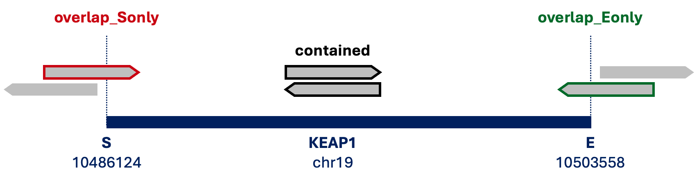
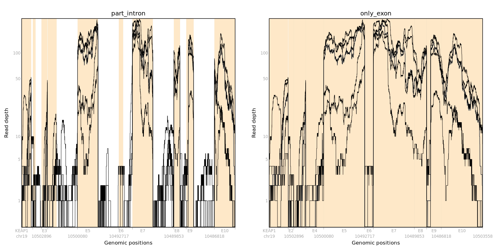

3 Data Generation
3.1 BAM slicing
The relevant reads can be extracted for efficient analysis on a subset of genes.
STAR and samtools enable output sorted alignments to Aligned.out.sort.bam file.
For simple explanation of data generating steps, suppose that we only consider a case of gene KEAP1 and 5 samples in the bamfiles folder.
A comprehensive gene annotation file (GTF) gencode.v36.annotation.gtf can be downloaded at GENCODE.
gtftools is able to save gene coordination and ID mappings in bed format as gencode.v36.genes.bed from the GTF file, and then genomic region for KEAP1 be obtained as genic_region.bed.
bedfile="$base/gencode.v36.genes.bed"
genome_region=$(
grep -P $genename"\t" $bedfile \
| cut -f5
)
awk -v gene="$genename" -F'\t' '
$7 == gene {print $1, $2, $3}
' OFS='\t' "$bedfile" > $geneDir/bamslice/genic_region.bedThe samtools and BEDTools are required, and inputs to get a sliced BAM for the specific gene and sample are given:
- Gene of interest
- Genomic coordinates to extract reads
- Input directory for BAM files
- Output directory for sliced BAM files
- Prefix for output BAM files
genename="KEAP1"
genome_region="chr19:10486124-10503558"
ibampath="/bamfiles/A001_Aligned.out.sort.bam"
bamsliceDir="/bamslice"
ibamslice="KEAP1_A001_slice"We define 3 cases to select reads within genome region of a gene:
*_contained.bam: both paired reads are in the genome region (black line)*_overlap_Sonly.bam: one of paired reads overlaps with the start genomic position (red line)*_overlap_Eonly.bam: one of paired reads overlaps with the end genomic position (green line)

The samtools can extract paired-end reads in *_1.bam and *_2.bam from BAM files and merge as *_temp.bam.
Based on overlap with the gene, intersectBed from BEDTools identifies reads and start and end positions of the gene are created in *_genes_S.bed and *_genes_E.bed.
# Slice BAM by read orientation (flags 147 and 99)
samtools view -b -f 147 ${ibampath} $genome_region \
> $bamsliceDir/${ibamslice}_1.bam
samtools view -b -f 99 ${ibampath} $genome_region \
> $bamsliceDir/${ibamslice}_2.bam
samtools merge -f \
$bamsliceDir/${ibamslice}_temp.bam \
$bamsliceDir/${ibamslice}_1.bam \
$bamsliceDir/${ibamslice}_2.bam
# Intersect with genic region
intersectBed \
-a $bamsliceDir/${ibamslice}_temp.bam \
-b $bamsliceDir/genic_region.bed \
> $bamsliceDir/${ibamslice}_overlap.bam
intersectBed \
-a $bamsliceDir/${ibamslice}_temp.bam \
-b $bamsliceDir/genic_region.bed \
-f 1.0 \
> $bamsliceDir/${ibamslice}_contained.bam
# Start (S) / End (E) positions as 1bp BED
awk '{print $1"\t"$2"\t"$2}' $bamsliceDir/genic_region.bed \
> $bamsliceDir/${ibamslice}_genes_S.bed
awk '{print $1"\t"$3"\t"$3}' $bamsliceDir/genic_region.bed \
> $bamsliceDir/${ibamslice}_genes_E.bedAfter identifying reads overlapping only the start or end of gene, we can merge with reads fully contained within the gene to make a preliminary BAM
file as *_pre.bam.
The final files are a sorted BAM file *.bam and a BAM index file *.bam.bai, and removing all intermediate files are recommended to optimize storage.
# Reads overlapping start but not end -> S-only
intersectBed \
-a $bamsliceDir/${ibamslice}_overlap.bam \
-b $bamsliceDir/${ibamslice}_genes_S.bed \
| intersectBed \
-a stdin \
-b $bamsliceDir/${ibamslice}_genes_E.bed \
-v \
> $bamsliceDir/${ibamslice}_overlap_Sonly.bam
# Reads overlapping end but not start -> E-only
intersectBed \
-a $bamsliceDir/${ibamslice}_overlap.bam \
-b $bamsliceDir/${ibamslice}_genes_E.bed \
| intersectBed \
-a stdin \
-b $bamsliceDir/${ibamslice}_genes_S.bed \
-v \
> $bamsliceDir/${ibamslice}_overlap_Eonly.bam
# Merge all parts
samtools merge -o $bamsliceDir/${ibamslice}_pre.bam \
$bamsliceDir/${ibamslice}_contained.bam \
$bamsliceDir/${ibamslice}_overlap_Sonly.bam \
$bamsliceDir/${ibamslice}_overlap_Eonly.bam
# Sort & Index
samtools sort $bamsliceDir/${ibamslice}_pre.bam \
> $bamsliceDir/${ibamslice}.bam
samtools index \
$bamsliceDir/${ibamslice}.bam \
$bamsliceDir/${ibamslice}.bam.bai
# Cleanup temporary files
rm \
$bamsliceDir/${ibamslice}_1.bam \
$bamsliceDir/${ibamslice}_2.bam \
$bamsliceDir/${ibamslice}_temp.bam \
$bamsliceDir/${ibamslice}_overlap.bam \
$bamsliceDir/${ibamslice}_contained.bam \
$bamsliceDir/${ibamslice}_pre.bam \
$bamsliceDir/${ibamslice}_genes_S.bed \
$bamsliceDir/${ibamslice}_genes_E.bed \
$bamsliceDir/${ibamslice}_overlap_Sonly.bam \
$bamsliceDir/${ibamslice}_overlap_Eonly.bam3.2 Pileup
SCISSOR package1 can be applied to generate pileup from BAM file, region info, and coverage plots based on its tutorial.
From the GTF file, build_gaf() function creates a region info file named SCISSOR_gaf.txt and shows the full path of the file. The file contains regions by gene_name and gene_id.
For instance, we can make pileup and compare coverage plots of part_intron and only_exon using gene KEAP1 and the 5 samples.
If 5 sliced BAM files are saved in the bamslice folder, the full file path of them can be set as BAMfiles.
gen_pileup() function saves pileup, regions, and Ranges for Gene, which become inputs to plot pileup figures.
BAMfiles <- list.files(path=paste0("../bamslice"), pattern="\\.sort.bam$", full.names=TRUE)
caseIDs <- substr(basename(BAMfiles), start=6, stop=22)
gen_pileup = function(Gene, regionsFile, BAMfiles, caseIDs, outputdir) {
if (!Gene %in% regionsFile$gene_name) {
stop(Gene, " is not in gene_name of SCISSOR_gaf.txt")
}
regions <- as.character(regionsFile[match(Gene, regionsFile$gene_name), c("regions")])
Ranges = SCISSOR::get_Ranges(Gene=Gene, regions=regions, outputType="part_intron")
pileup = SCISSOR::read_BAM(BAMfiles=BAMfiles, caseIDs=caseIDs, regions=regions)
save(pileup, regions, Ranges, file=paste0(outputdir, Gene, "_pileup_part_intron.RData"))
}
gen_pileup(
Gene = "KEAP1",
regionsFile = data.table::fread(file="./dataPrep/SCISSOR_gaf.txt"),
BAMfiles = BAMfiles,
caseIDs = caseIDs,
outputdir = paste0("../pileup/")
)
par(mfrow=c(1,2))
# part_intron
load(paste0("../pileup/KEAP1_pileup_part_intron.RData"))
plot_pileup(
Pileup = log10(pileup+1),
case = caseIDs,
Ranges = Ranges,
logcount = 1,
main = "part_intron"
)
# only_exon
pileupData = build_pileup(
Pileup = pileup,
case = caseIDs,
regions = regions,
inputType = "part_intron",
outputType = "only_exon"
)
geneRanges = get_Ranges(
Gene = Ranges$Gene,
regions = regions,
outputType = "only_exon"
)
plot_pileup(
Pileup = log10(pileupData+1),
case = caseIDs,
Ranges = geneRanges,
logcount = 1,
main = "only_exon"
)
The only_exon figure has 10 exons after filtering introns from part_intron. The start and end positions for exon (e) and intronic part (ip) per exon are matched with the pileup plot and we only consider exon to measure sample quality.
## ip.start e.start e.end ip.end
## exon1 10503558 10503558 10503241 10503187
## exon2 10503186 10503186 10503093 10502897
## exon3 10502896 10502896 10502697 10502688
## exon4 10502687 10502687 10502388 10502039
## exon5 10500429 10500080 10499395 10499046
## exon6 10493066 10492717 10492573 10492263
## exon7 10492262 10492262 10491577 10491228
## exon8 10490202 10489853 10489648 10489436
## exon9 10489435 10489435 10489192 10488843
## exon10 10487167 10486818 10486125 10486125Choi, H.Y., Jo, H., Zhao, X. et al. SCISSOR: a framework for identifying structural changes in RNA transcripts. Nat Commun 12, 286 (2021). https://doi.org/10.1038/s41467-020-20593-3↩︎